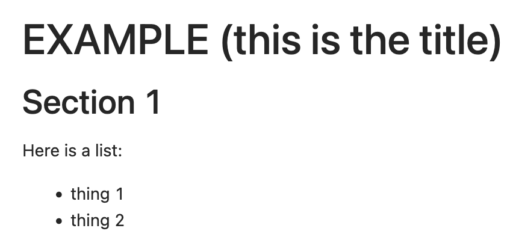
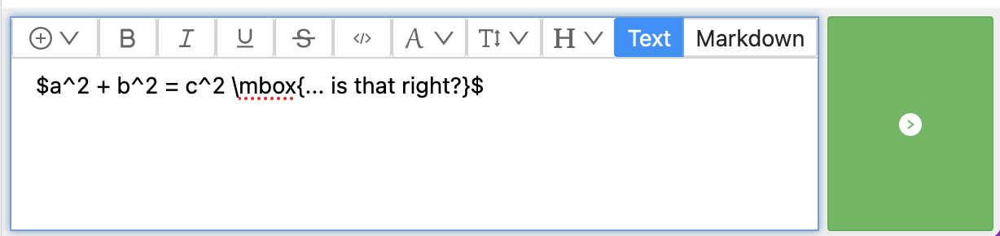
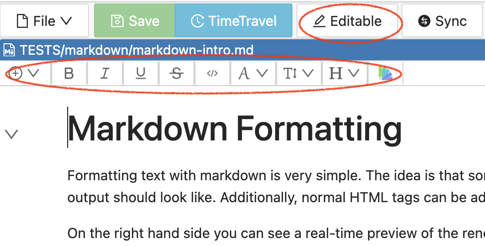
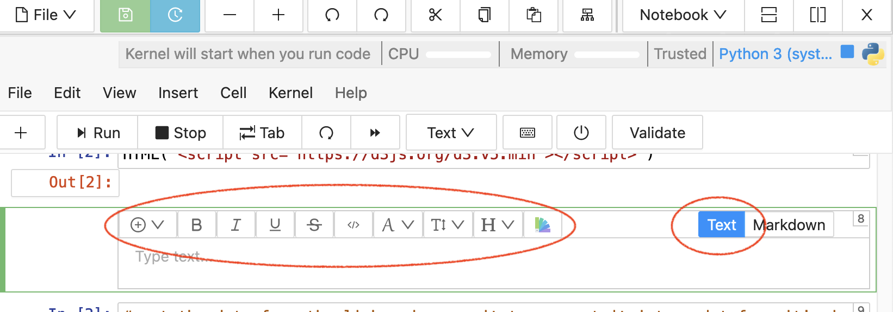
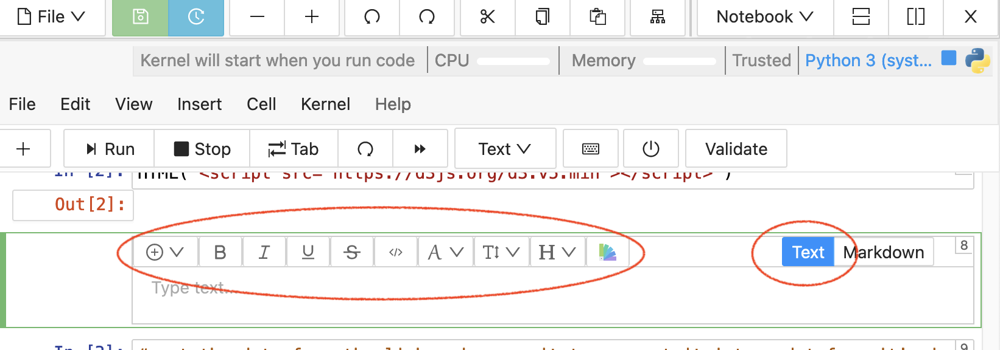
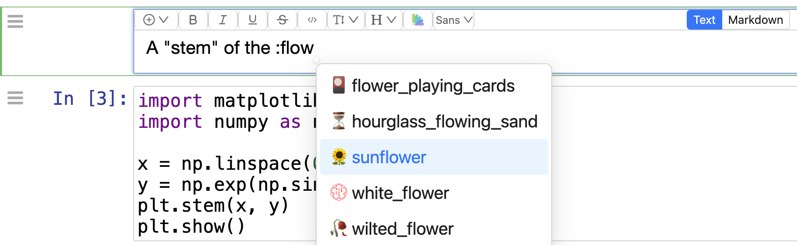

Rich Text Editing
With Rich text editing, as you enter content, your work is displayed in a form that resembles the final result, i.e. you do not see formatting commands mixed in with text.
Here is how some sample content will appear as you enter it with rich text editing. For each line, use the usual markdown formatting characters, i.e. start the first line with a “#” and a space:
And here is how it would appear if you type the same markdown code without rich text editing:

With rich text editing, you see the final result right away.
Note that you can also set title and subtitle font size by selecting the text and using “H” (headings) in font options, as shown below.
Where Rich Text Editing is Available
Markdown and Frame Editor: when editing Markdown (.md) files. Select “Editable Text”.
Whiteboard In text, sticky notes, and task lists.
Jupyter Notebooks In text or Markdown cell types.
Real-time Collaboration
Multiple users can use rich text editing on a file, and see one another’s work at the same time.
LaTeX in Rich Text Editing
When using rich text editing, you can embed LaTeX directives between dollar signs ($) followed by a space. You must add a space to cause conversion to mathematical characters.
Here is an example of latex entry in Side Chat for a file, before typing a space after the second $:
Here is the formatting that results after typing the space:

Font options
You can specify font family, face (bold, italics, etc.), size, and color.
If you select “Text” mode (instead of Markdown) for editing content between code cells, then you can highlight any text and click the color palette icon, then set the color of that text.
For a markdown file: select “Editable Text” for font options.
For a Jupyter cell: select “Text” cell type, then “Edit” for font options.
 

To set the color for selected text in a markdown cell, click the colored dot in the font options toolbar.

You can then select a color picker and a color.

(Implementation note: rich text font options use <span class=’color:#0000ff’>…</span> under the hood. The format is sufficiently well-defined that it doesn’t get removed by CoCalc XSS processing. So it works even if e.g., a student opens the file and doesn’t switch to trusted mode.)
Insert emoji
In CoCalc, anywhere you use the WYSIWYG Slate-based rich text Markdown editor, you can type “:”” and search from thousands of standard emojis. Here it is in action in a Jupyter notebook:
When you first type “:” you’ll see the dropdown in a fraction of the second, showing the most popular emojis. Type further, and you’ll instead do a full text search through a large number of matching emojis. These emojis are standard (provided by markdown-it) and will also work in Github, etc.
Here’s the CoCalc feature announcement and discussion: ANN: new feature – searchable emoji list.
Limitations
At present, the markdown “Editable Text” editor does not offer an easy way to add a link. And adding an image is limited to copying an image that has been added to the paste buffer. To add a link, or to add an image from a file at this time, choose “Markdown Code” in the pulldown menu at the top.


{kind=link}
{kind=link}
{kind=link}
{kind=link}
{kind=link}